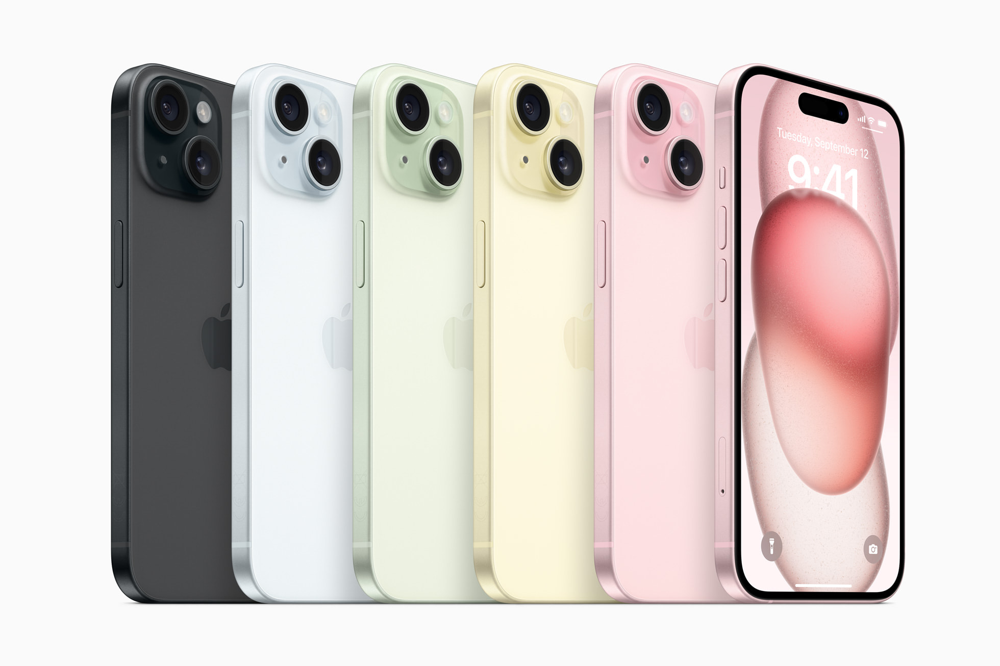

Bước nhảy vọt cho iPhone với thiết kế mới tuyệt đẹp, gồm mặt lưng bền bỉ làm bằng kính pha màu và cạnh viền bo tròn mới, Dynamic Island, camera Chính 48MP với camera Telephoto 2x, và cổng kết nối USB-C
Tin tức
🔥Apple ra mắt iPhone 15 và iPhone 15 Plus🔥
CUPERTINO, CALIFORNIA Hôm nay, Apple đã ra mắt iPhone 15 và iPhone 15 Plus, với mặt lưng bằng kính pha màu đầu tiên trong ngành cùng bề mặt nhám tuyệt đẹp, và thiết kế cạnh viền bo tròn mới trên vỏ máy làm bằng nhôm. Cả hai dòng máy đều được trang bị Dynamic Island, và hệ thống camera tiên tiến được thiết kế nhằm giúp người dùng chụp được những bức ảnh tuyệt diệu của mọi khoảnh khắc trong cuộc sống. Camera Chính 48MP mạnh mẽ hỗ trợ chụp ảnh với độ phân giải cực kỳ cao và tuỳ chọn Telephoto 2x mới mang đến cho người dùng ba mức thu phóng quang học - như được trang bị camera thứ ba. Dòng sản phẩm iPhone 15 cũng ra mắt chế độ chân dung thế hệ mới, giúp chụp ảnh chân dung dễ dàng hơn với chi tiết rõ nét và khả năng chụp ảnh trong điều kiện ánh sáng yếu. Với chip A16 Bionic mang lại hiệu năng mạnh mẽ đã được chứng minh, cổng kết nối USB-C, tính năng Tìm Chính Xác dành cho Tìm Bạn, cùng các tính năng về độ bền hàng đầu trong ngành, iPhone 15 và iPhone 15 Plus thể hiện một bước nhảy vọt lớn.
iPhone 15 và iPhone 15 Plus sẽ có năm màu mới tuyệt đẹp: hồng, vàng, xanh lá, xanh dương và đen.
“iPhone 15 và iPhone 15 Plus thể hiện một bước nhảy vọt lớn với những cải tiến tuyệt vời về camera mang đến cảm hứng sáng tạo, Dynamic Island trực quan cùng các tính năng như Roadside Assistance thông qua vệ tinh tạo ra sự khác biệt lớn trong cuộc sống của người dùng,” Kaiann Drance, Phó Chủ tịch bộ phận Tiếp thị Sản phẩm iPhone Toàn cầu của Apple chia sẻ. “Trong năm nay, chúng tôi cũng đưa sức mạnh của công nghệ nhiếp ảnh điện toán lên một tầm cao mới với camera Chính 48MP có chế độ mặc định 24MP mới cho ra những tấm ảnh với độ phân giải cực kỳ cao, một tuỳ chọn Telephoto 2x mới, và những chế độ chụp ảnh chân dung thế hệ mới."
